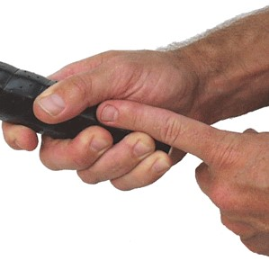
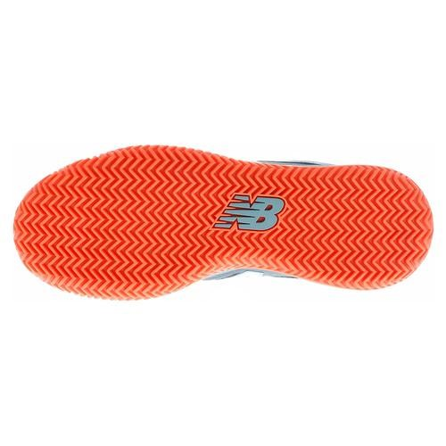
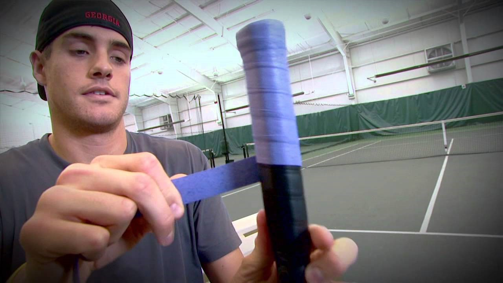

Equipment is basically anything you need or want to bring on court. Now there are a lot of misconceptions and myths surrounding equipment. For example, there is a substantial number of people who believe that the best players in the world can play at the highest level of the game with any racket they can get their hands on. That is simply not true. Players of higher caliber are more sensitive to weight, balance, strings and tension. They have specifically chosen their rackets and string to best suit their game style. ATP players even string their rackets every single day to ensure that they aren’t losing any potential string or power. This is just one misconception and we will be tackling a few more as we go along.
Basic equipment is simply a racket that has strings and a handle. Everything beyond that is personal preference. Some players are good with just a racket. Others have 3 rackets, a pack of 10 over-grips, 3 pairs of socks, 2 shirts, an extra pair of shorts, 2 water bottles, a sports drink, a spare pair of shoes, athletic tape and even a box of candy, all stored in a six-racket tennis bag. It really comes down to a simple question. What will make you most comfortable on court? If it’ll help you stay calm and have fun, take it.
The tennis racket is without a doubt the most important piece of tennis equipment. For a beginner/intermediate player who is looking to get serious, the large number of brands, makes, models and combinations can be confusing and daunting. On this page, we will break down all the different elements that should be considered and how to narrow your search for the perfect racket.
The first thing to determine is the grip size. There is a simple test to determine if a grip is the appropriate size for you. Simply hold the grip as you normally would and place the index finger of your non-playing hand between the fingers and palm of your hand. If there is just enough room for your finger, then the grip is the appropriate size. Refer to the image below.
Racket frames come in all shapes and sizes. Newer players often get caught up in the material and the weight. The material of the racket is not something to be overly concerned about. Simply put, most high-end rackets these days are made of graphene and lower-end rackets are made of aluminum. If you go to a specialty tennis store rather than Walmart to buy your racket, you will most likely buy a graphene racket.
Contrary to common belief, a lighter racket does not improve your ability to hit the ball harder. In fact, it is quite the opposite. Heavier rackets allow you to hit the ball harder than lighter ones. This is due to momentum, but we will not dive into the physics. If you are serious about your tennis and want to improve the right way, the right way being with proper technique and training, then it is best to slowly build your way up to the heavier rackets. For example, if you are currently using a racket that is 275g, then your next racket should be 285g, then 295g, then 305g, and so on. You don’t have to increase in 10g increments but it should be steady. I do not recommend going from a 275g racket to a 315g one, this will only increase you chance for injury.
The weight of the racket is definitely important, but it is secondary to the racket’s weight distribution. The racket’s weight distribution influences the feel of the racket while it is being used. A racket that is head heavy will be harder to swing but will feel more stable when in contact with the ball. A racket that is head light, will feel more manoeuvrable but will be less stable when in contact with the ball. It all comes down to preference. However, rackets that are extremely head heavy are typically not used by the top players. Head light rackets with a higher weight are normally the most common. The easiest way to compare the weight distribution between rackets is to use the swingweight. This is a metric used to measure how a racket will feel when it is being swung.
Head size is usually the favorite metric for novice players simply because it is the easiest to understand. Bigger head, more power, smaller head, more control. Keep in mind that there are many other factors that affect a racket’s performance than just it’s head size. Things such as the type of string and the tension are probably more important. It is important to keep in mind that the head size is used to classify rackets, but not more than that. On the pro tour, most players will have a racket of either 100 sq. inches or 97 sq. inches, there isn’t much more variation than that. The only thing you should use the racket size for is to determine what the racket was designed for. Rackets that are 100 sq. inches and above are power rackets. They are designed for the player who wants to add power to their game. Hence, things such as the recommended tension and strings and the frame type are also designed for the power player. Rackets that are 97 sq. inches are the middle ground. A good combination of power and control. Anything smaller than that will give you good control but will cause significant drops in power.
The brand has an interesting role in the selection of racket. There are three well-established brands: Wilson, Head and Babolat. In my experience, each brand’s rackets cater to specific kinds of players. Players who have a lot of power and top spin tend to use Babolat racket. Look at Nadal and Dominic Thiem, they both hit a very hard and spinny ball. Wilson rackets are for players who have efficient and compact strokes. Players such as Federer, Dimitrov, Monfils and Del Potro. All players will simple yet controlled stroked. Head rackets are the middle ground. They seem to be the best balance between power and control. In recent years, Yonex has risen to become a top choice for the best players in the world. They are still establishing themselves but they offer rackets that stand out from the rest. They have good manoeuvrability and spin, but I am unsure as to their power producing capability. If you look at the top players who use Yonex rackets on both side of the game, Wawrinka, Shapovalov, Kerber and Kyrgios, they are all very strong players who are capable of putting pace on the ball due to their physique and technique.
On the market right now, there exists rackets that are marketed as having “Closed String Patterns” or “Open String Patterns”. Open string patterns are designed to produce more spin whereas Closed string patterns are for players who hit a flatter ball. In my experience, the two do not make much of a difference on your game as much as the strings themselves do. This should not be a primary concern when selecting a racket but if you are truly confused about the two then ask somebody who works at a specialty tennis store.
The best way to begin your search is always to base it off of what you have and what you need/want. For example, if with your current racket you are getting too much power but not enough control, then you need invest in a racket that has a lower swingweight. At the end of the day, if you aren’t sure as to which racket to use, a lot of stores offer a demo program where you can borrow rackets, test them out and then return them at no charge. This is a great way to make sure you are getting the best racket possible and I highly recommend it.
It’s important to realize that there are several types of strings. Such as multifilament, monofilament, Hybrid. We will not be discussing the types of strings for there exists a plethora of resources online to understand the purpose behind each string. What we want to emphasize is that you should know what you want your strings to do. The best method to select a set of strings is to have a series of questions and be clear in what your priorities are. If you want your strings to last as long as possible, go for hybrid strings at a lower tension. If you want more spin and control, then you best buy a multifilament at a higher tension. It all comes down to want you want and need. Keep in mind that every racket has a recommended tension range from the manufacturer, this will give you a sense of what would be considered higher or lower tension. In my experience, it takes a few tries to determine the string and tension that best suits you. There are going to be few misses before you get a hit, but once you get the hit, you never want to change. The more questions you have, the better and don’t be afraid to ask the workers at your local tennis store.
Specifically regarding tension, a higher tension will give you more spin and control and a lower tension will you give you less control and more power. The easier way to think of this is to imagine the racket as a trampoline. The looser the springs, the higher you will jump, the tighter the strings, the lower you’ll jump. Certain tensions are recommended with certain strings. For example, if you are using multifilament strings, then a higher tension is recommended. Try and figure out which tension is best based on your string and racket by asking someone with more experience or a worker at your local store.
Tennis shoes are not a requirement but are highly recommended. They are more durable and will last longer on hard courts than a regular pair of runners. All my experience has been on hard court, so I can not speak for clay or grass court players. The best pair of shoes for hard courts are those that have a rubber sole and a tough exterior around the edges, this will help them last during the regular wear and tear. If you are looking for shoes that help you slide on the hard court, then you need a pair of shoes that have a pattern on the soles like the one in the image on the side. The zig zag pattern is typically for clay court to prevent clay getting stuck in the soles. This pattern will give you the ability to slide. The sole does not have be covered exclusively in this pattern, it can have others as well but as long as some portion has this pattern, then you should be good. Keep in mind, that you need a lot of speed and good ankle strength to be able to slide and you won’t be able to slide after every shot. Recently, Wilson came out with a shoe that was marketed as giving the ordinary player the ability to slide like a pro. In a shoe like that, you are sacrificing traction/grip. You will be a lot more prone to slipping and I highly recommend you stay away from shoes like that.
In terms of the fit, you want to limit the amount of space between your foot and the inside walls of the shoe. Your feet will have the tendency to move in your shoe since you will be starting and stopping a lot. If there is a lot of room, then you will hit the walls of your shoe and cause severe pain. Former world No.4 Brad Gilbert had the nail of his big toe surgically removed simply because it caused a lot of pain when it hit his shoe. You want your shoe to feel comfortable but also snug, much like a hockey helmet.
If you are having difficulty with finding a shoe that fits appropriately or your fit is still moving around, you can invest in a pair of inner/athletic socks. These are a pair of socks, much like ankle socks, that are worn under your regular socks. It simply adds another layer and will prevent movement inside the shoe.
Overgrips are completely personal preference. Most players will use it prevent the main grip on the handle from getting ruined. The main grip is the one the racket comes with. This can be regripped but can be costly. Overgrips have two specific types, ones that are tacky and ones that are not. Grips that are tacky are for players whose hands do not sweat. A tacky grip is a bit sticky and will prevent the racket from slipping. Non-tacky grips are for players whose hands to sweat while playing, tacky grips get very slippery when wet. If your hands sweat profusely like mine, then I recommend investing a dry feel tourna grip. These grips are the best in the world for absorbing sweat. They are the bluish purple grips you may have seen on TV.
Bags are completely personal preference. Some players don’t see the need in investing a bag and simply carry a racket in their hands and whatever else they need in a backpack. Others invest in the best bags on the market and put whatever they can find in them. It’s a question of want and need. If you just need to carry your rackets, and you have less than 3, then a 3-racket bag will do fine. If you have one racket, a sleeve will do as well. If you have 1 or 2 rackets but want something to carry some clothes or water bottles then a tennis backpack or tote bag will do. Look at your overall circumstances to determine what you need. For example, I have 3 rackets, I carry two bottles of water and a can of balls with something to snack on and I used to bus about an hour each way to practice and back. I then switched to a six racket bag. I can now carry my rackets, balls, water, towel and whatever else I need quite easily on the bus now, though I do get a few glances every once in a while. If you have a car, then you probably don’t need a big bag. Also, a six racket bag doesn’t mean you have to put six rackets in there. It simply means you have the space to put six rackets. Most club players will have 3 rackets and will carry whatever else they need in the rest of the space.
If you are a competitive player, then there is an element of the bag being a status symbol. Think of it this way, if you walked on to court next to guy with this giant nine-racket bag vs a guy who has a racket sleeve, who would you be more intimated by? Though this is superficial it could become an interesting tactic in the pre-game mental warfare, just some food for thought. But if you are a solid player with a racket sleeve then you shouldn’t be worried at all, the bag obviously has no impact on skill.
What else you consider as “equipment” is completely dependent on you. My main hitting partner only carries his rackets and a water bottle. I carry my rackets, 2 bottles of water or sports drink, 6 cans of balls, a towel and some granola bars. Brad Gilbert used to carry Jolly Ranchers for a quick boost of energy during matches. Take whatever you need and want, it’s totally up to you.